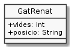

Exercici 04_05. Renat té posició¶
Exercici 04_05. Renat té posició¶
Context
Carpeta de lliurament:
04_05_posicio/Continguts relacionats: Classes i objectes
Com lliurar-lo: instruccions
[✓] Exercici amb autoavaluació
Enunciat
Disposem de la classe GatRenat amb la següent definició:
1 2 3 | public class GatRenat {
public int vides = 7; // vides disponibles del gat Renat
}
|
Una mica de culturilla POO¶
Tot i que vides és una variable, en el món de la POO aquest tipus de
bestioles se les coneix com propietats o camps.
Una classe pot definir tantes propietats com li calguin.
Als valors que tenen les propietats d’una instància en un determinat moment se li anomena estat de la instància.
Què haig de fer?¶

En aquesta ocasió afegirem al nostre gat Renat la possibilitat d’indicar en quina posició es troba. En concret, podrà estar dret, assegut o estirat.
Modifica la definició de la seva classe perquè pugui guardar aquesta informació, fent que inicialment el gat estigui estirat.
La informació de l’estat la guardarem en una propietat amb el nom
posicio que serà de tipus String.
Crea una classe anomenada UsaGatRenat que disposi d’un main() en el que:
s’instanciï una variable de tipus
GatRenates mostri el seu estat inicial, és a dir, la informació del nombre de vides i la posició inicial)
es modifiqui a assegut, i
es torni a mostrar la nova posició.
L’execució hauria de ser:
$ java UsaGatRenat
Vides inicials: 7
Posició inicial: estirat
Posició final: assegut